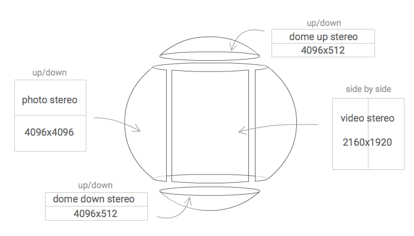

The recorded video is not 360 degrees, but it is seamless integrated into a 360 degree picture.

The resulting playing video for the viewer is a 360 degrees stereo video where the action only happens at certain degrees of the scene.
This video format radically improves most of the problems and limitations of 360 video : video size, video quality ( resolution, bitrate per angle), streaming bandwidth, video decoding capabilities of the player, etc...
In other words, this format makes possible to play the highest video quality settings available with current VR devices ( 6k at 60 fps ).
For the same reasons, it makes possible to play lower video quality settings using much less resources ( bandwidth, decoding process… ).
Many of the current VR videos ( 360 stereo 3D ) are being made by custom rigs of only 2 professional cameras. They record stereo footage, and stitch it in post-process to a 360 picture of the scene, or they record stereo footage on a chroma to later make a CGI environment.
Presence Camera is a rig + software to make 360 stereo video SEAMLESS without a manual stitching process using 2 off-the-shelf cameras ( any commercial cameras, we used action yi for this demo ).
It is an specific technology developed to easily make this kind of seamless videos ( where the action only happens at certain degrees of the scene ).
There is not “traditional stitching” involved, so the post-processing is automated by presencecamera.com algorithms.
Presence camera aims to democratize the 360 Stereo 3D video content creation.
John Carmack at OC3 speaking about the value of playing some degrees of video instead of the full 360: Dynamic streaming Facebook.
John Carmack at OC3: "Probably the mayority of content people want to create have some degree of focusing". Using only 2 cameras to avoid stitching.
John Carmack also talked about the importance of steady 60 fps, something hard to reach on mobile with traditional "360 video" playing, but much easier with the presented format.